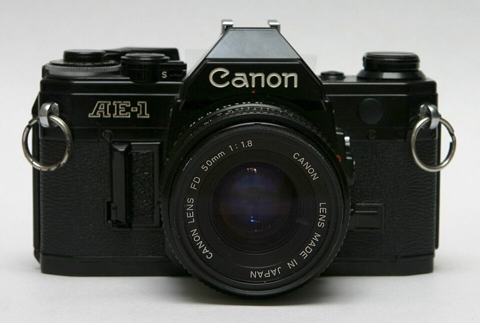

36 EXP. / 카메라 / 수동 SLR / Canon AE-1
Canon AE-1 캐논 AE-1
셔터 우선 자동 노출을 대중화한 SLR. 셔터 속도만 정하면 조리개는 카메라가 맞춥니다.

주요 사양
- 생산
- 1976~1984년
- 셔터
- 전자 제어 천 셔터 가로주행, 2초~1/1000초 + B
- 노출
- 셔터 우선 자동, 수동
- 플래시 동조
- 1/60초
- 배터리
- 4LR44(4SR44) 6V 1개 — 없으면 셔터도 작동 안 함
- 마운트
- 캐논 FD
- 무게
- 590g
좋은 점
- 셔터 우선 자동이라 노출을 몰라도 시작하기 쉬움
- FD 렌즈가 저렴하고 종류가 많음
- 디자인과 조작감이 좋아 지금도 인기
아쉬운 점
- 배터리가 없으면 아예 작동하지 않음
- "셔터 끽끽 소리"(미러 복귀 시 날카로운 소리)가 생기는 개체가 많음
- 캐논 EF(현행 캐논) 렌즈와 호환 안 됨
중고로 살 때 확인할 것
- 셔터를 누를 때 날카로운 끽 소리가 나는지 — 미러 쪽 윤활·완충재 노화 신호
- 새 배터리를 넣고 셔터·노출계가 모두 작동하는지
- AE-1과 AE-1 Program 구분: Program은 완전 자동(P) 모드가 있음
수동 SLR 전반의 점검 방법과 결함 사진은 수동 SLR 가이드에 있습니다.
시세 참고 (해외 판매가, 2026년 10월 확인)
| 판매처 | 가격 | 비고 |
|---|---|---|
| Brooklyn Film Camera (미국) 정비품 바디 | $250~350 | |
| 같은 곳, 정비품 + 50mm 렌즈 | $400~500 |